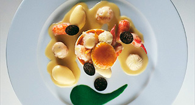

Hojaldre Souffle de Lenguado y Champiñones. Muselina suave de "allioli" de pescados de roca.
"Cocina Neoclásica, Texturas crujientes y cremosas. Nuevas técnicas texturizantes y el toque de la Neosalsa catalana por excelencia"

| Muselina de allioli/pescados | |
|---|---|
| Caldo de Pescado | 250 ml. |
| Patata | 60 gr. |
| Nata Líquida | 50 ml. |
| Yemas de huevo | 2 un. |
| Aceite de girasol | 75 ml. |
| Ajo | 1 dt. |
| Sal | 1/2 c.c. |
| Duxelles | |
| Champiñones | 500 gr. |
| Chalotas | 3 un. |
| Mantequilla | 60 gr. |
| Fino o Manzanilla | 50 ml. |
| Ciboulette o perejil picado | 1 c.s. |
| Sal marina | 1 cc. |
| Soufflé | |
| Fumet de Lenguado | 250 ml. |
| Albumina | 20 gr. |
| Acabado y Presentación | |
| Filetes de Lenguado | 8 un. |
| Aceite de oliva | 40 ml. |
-
Muselina Allioli/Pescados
- Hervir 15' la patata troceada junto con el caldo de pescado.
- Triturar finamente, agregar la nata, rectificar de sal.
- Pasar por un colador fino. Reservar.
- Hacer un allioli de manera tradicional. Mezclar con el caldo de pescado + nata + patata.
- Volver a pasar por un colador fino. Colocar en baño María suave. Servir inmediatamente una vez caliente pero no hirviendo 52º. Duxelles
- Lavar y cortar a cuartos los champiñones.
- Dorar los champiñones y las chalotas con la mantequilla. Salpimentar.
- Desglasar con el vino, llevar a ebullición y reducir a seco.
- Triturar con un robot y añadir la ciboulette o el perejil. Reservar al calor. Soufflé
- Montar en una batidora el caldo de pescado con la albumina hasta conseguir una textura de merengue.
- Colocar en una manga con boquilla y guardar en frío. Acabado/Presentación
- Limpiar y filetear los lenguados partirlos por la mitad transversalmente. Salpimentarlos. Marcarlos unos segundos en una plancha o sartén.
- En el fondo de los vol-au-venta colocar una cucharada de Duxelles. Disponer dos mitades de los filetes de lenguado.
- Agregar una cucharada de muselina. Cubrir con un rosetón de merengue.
- Introducir en el horno previamente calentado a 220º hasta que el conjunto tome color.
- Retirar del horno. En un plato sopero disponer un fondo de muselina, colocar los vol-au-vents calientes.
- Decorar con alguna hierba fresca y servir inmediatamente.